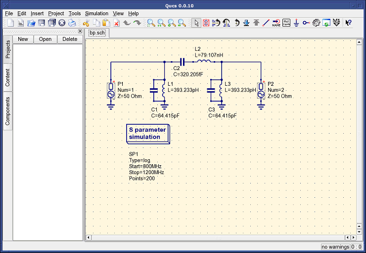
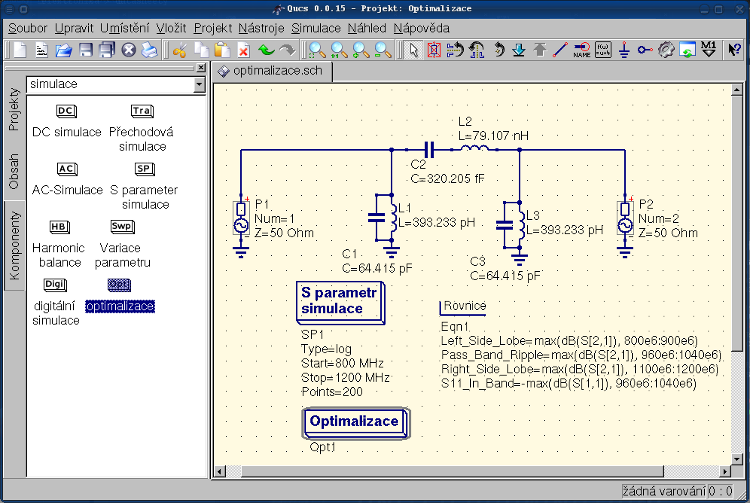
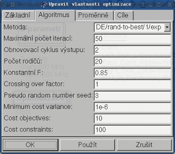
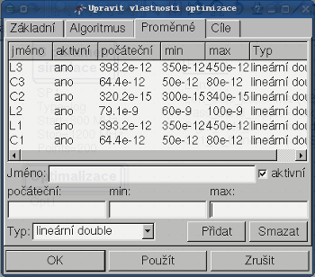
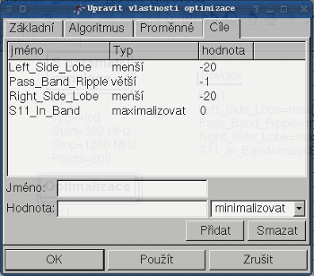
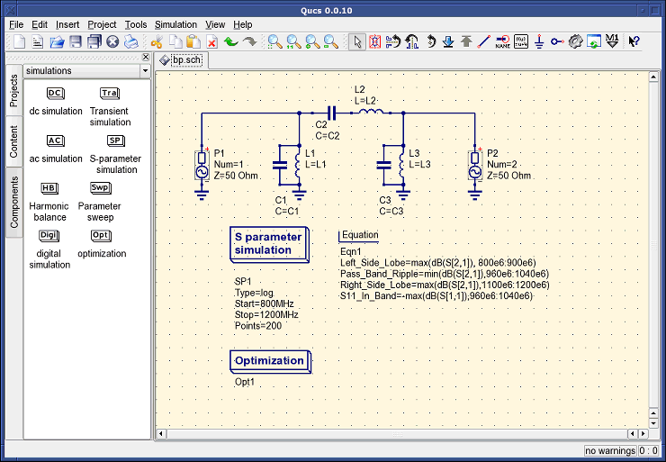
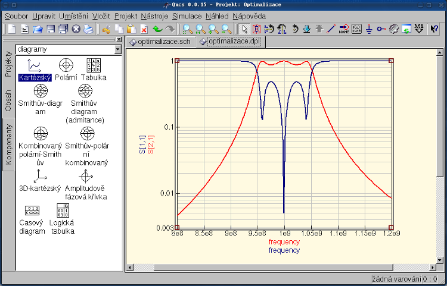

- Qucs -
Quite Universal Circuit Simulator
Začínáme s
optimalizací
Pro optimalizaci obvodu používá Qucs utilitku ASCO
(http://asco.sourceforge.net/).
Zde předložím popis jak připravit vaše schéma, jak to celé spustit a jak porozumět
výsledkům. Předtím než budete chtít využívat tuto funkci, musíte ASCO nainstalovat
na váš počítač.
Obvod s minimalizací není nic víc, než program, který minimalizuje počet
funkcí. Může to být každé časové zpoždění, nebo doba náběžné hrany v digitálních obvodech, nebo
jakýkoli zdroj v analogových obvodech. Další možností je definovat
optimalizační problém jako skládání funkcí, nebo jako v tomto případě,
definovat "figure-of-metir".
Pro nastavení optimalizace musíme dvě věci do schématu přidat:
rovnici/rovnice (Vložit -> Vložit rovnici) a velký čtverec s nápisem "Optimalizace" (Ve skupině "Simulace").
Sestavte schéma podle obrázku 1 a hrajte si s Qucs, dikud vaše schéma nebude
vypadat jako na obrázku 2 ;-) . Dejte si pozor na znaménko minus u S11_In_Band!

Obrázek 1 - Počáteční schéma

Obrázek 2 - Připravené schéma
Nyní vyberte ze skupin komponent komponentu "Optimalizace".
Z existujících parametrů je třeba věnovat speciální pozornost "Maximální počet opakování"
, "Konstanta F" a "Přechod přes faktor". Někdy může optimalizace trvat jen chvilinku,
ale někdy i celkem dlouho.

Obrázek 3 - Optimalizace - dialog, možnosti algoritmu.
V tabulce Proměnné, které definují jednotlivé komponenty bude vybráno z rozsahu, jak je zobrazeno
na obrázku 4. Jména proměnných jsou ve shodě s jejich identifikátory umístěných ve vlastnostech
komponent a NE jmen konponent.

Obrázek 4 - Optimalizace - dialoh, možnosti proměnných.
Konečně, se dostáváme do cíle kde objekty optimalizace (maximalizace, minimalizace) a
omezení (menší, větší, rovno) jsou definovány. Poté ASCO je automaticky zkombinuje
do jediné funkce a to je minimalizace.

Obrázek 5 - Optimalizace - dialog, cílové možnosti.
Dalším krokem je změna schématu a definice které součásti obvodu budou
optimalizovány. Výsledné schéma se zobrazeno na obrázku 6.

Obrázek 6 - Nové hlavní okno QUCS
Posledním krokem optimalizace je spuštění simulace stisknutím klávesy F2.
Simulace může trvat několik sekund na moderním počítači.
Nejlepší bude, když si výsledky necháte zobrazit do grafu. Vyberte si diagram
kartézský. Přidejte do něj S[2,1] a S[1,1]. Už jen nastavit barvy a tloušťku
grafu (čím větší číslo, tím tlustější).

Obrázek 7 - Qucs - okno s výsledky.
Nejlepší nalezené obvody můžete najít v optimalizačním dialogu v záložce
Proměnné. Zde jsou hodnoty pro každý z uvedených prvků (Obrázek 8).

Obrázek 8 - Nejlepší nalezené obvody.
Nahoru